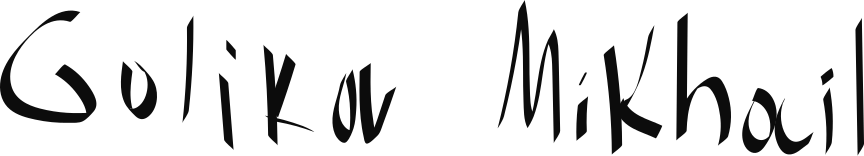
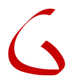
Портфолио
Я графический дизайнер. Работаю на стыке рукотворного жеста и строгой системы: беру живую энергию линии и собираю её в чёткую, узнаваемую идентику.
Логотипы, вариативные знаки, системы стиля и гайдлайны — от идеи до готового набора носителей.
Визуальная концепция, кампании, постеры и единый язык для города, digital и соцсетей.
Шрифтовые композиции, плакаты, леттеринг — там, где текст становится главным героем.
В основе айдентики — вариативный фирменный знак, работающий как «культурный контейнер». Классическая форма колонны остаётся постоянной опорой, а её внутренняя текстура и палитра непрерывно меняются.
Такой гибкий подход позволяет логотипу подстраиваться под конкретные выставки, крылья галерей и культурные события. От древнеегипетских артефактов до американских праздников — динамический знак отражает многообразие коллекций музея, сохраняя единую узнаваемую идентичность.
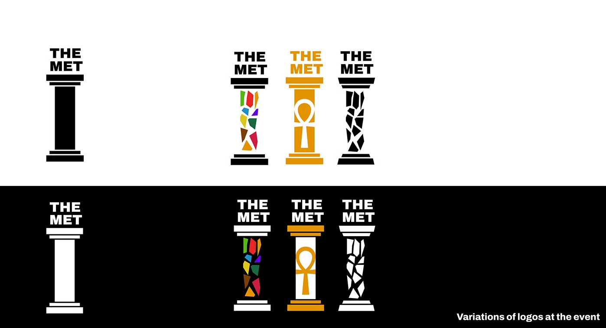
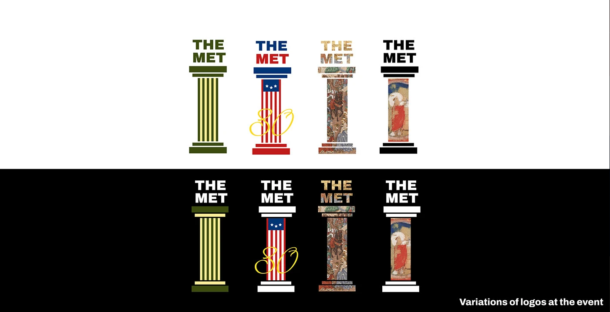
В рамках визуального обновления Метрополитен-музея концепция вводит модульную систему идентичности на основе вариативного логотипа.
Гибкая идентика напрямую взаимодействует с шедеврами: классическая колонна заполняет разрыв в «Сотворении Адама» Микеланджело, символизируя роль музея как связующего звена между человеком и искусством. Сообщение «Touch History» — «Прикоснись к истории» — делает Met не архивом, а живым, осязаемым опытом.
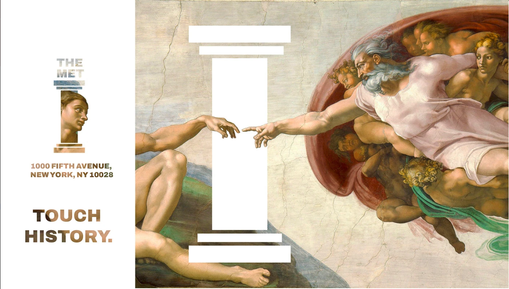
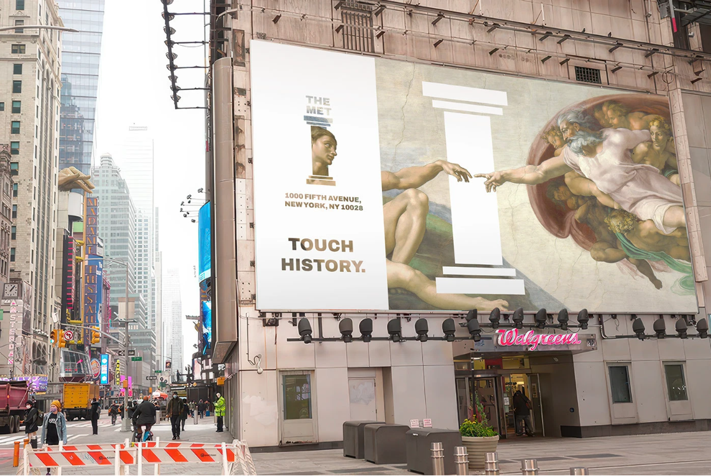
Часть редизайна Метрополитен-музея: визуализация кампании ко Дню независимости с новым вариативным логотипом.
Цель проекта — освежить образ Met, сделать его современнее и адаптивнее. В основе — модульная система вёрстки и вариативный знак, который трансформируется под особые события, выстраивая мост между классическим искусством и современным дизайном.
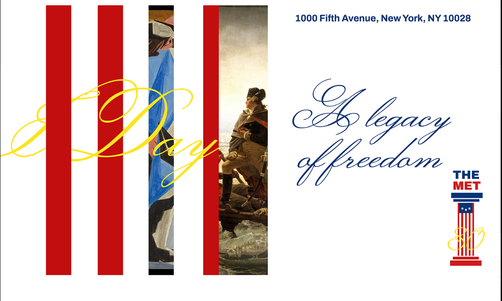
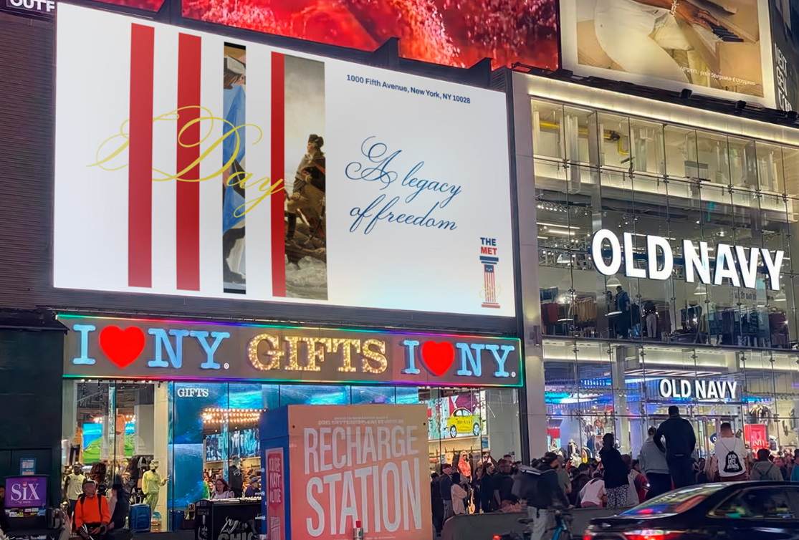
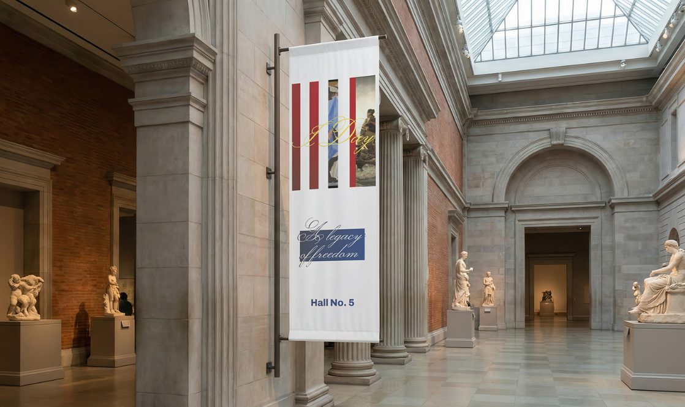
Айдентика премиального стейк-хауса Eat Meat в Солт-Лейк-Сити. Брутальный чёрно-белый язык, рукотворная гарнитура и знак из вилки и шампуров передают характер места: огонь, мясо и честная подача без лишнего.
В систему вошли рекламный постер, пригласительные на открытие, подарочный сертификат и фирменные носители. Крупная «кричащая» типографика и резкие мазки делают бренд заметным — от вывески до визитки. Слоган кампании: «Наш огонь жарче твоего аппетита».
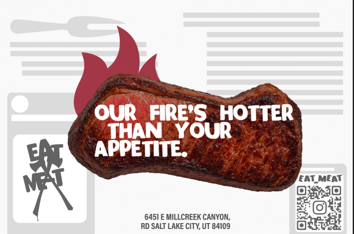
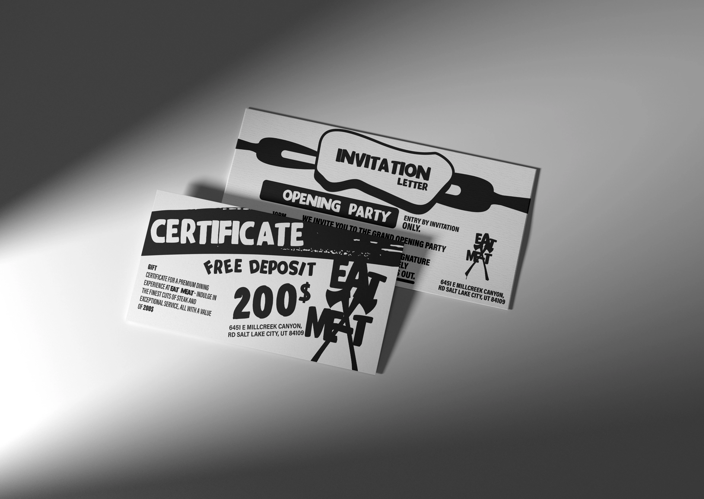
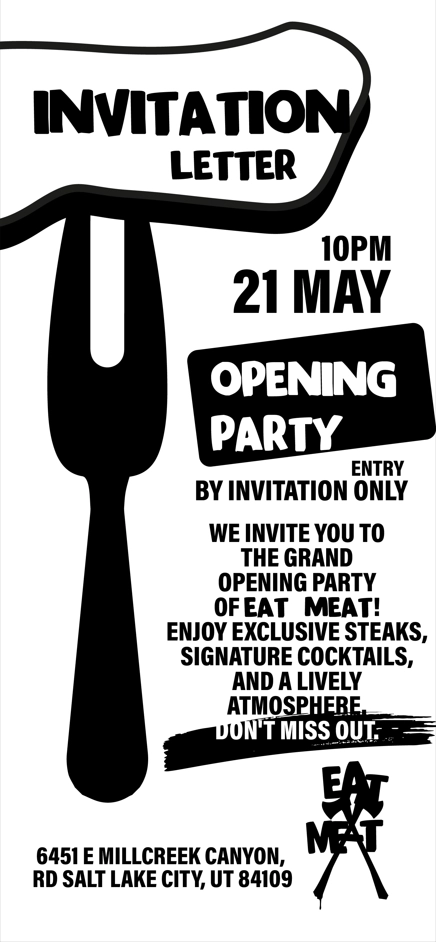
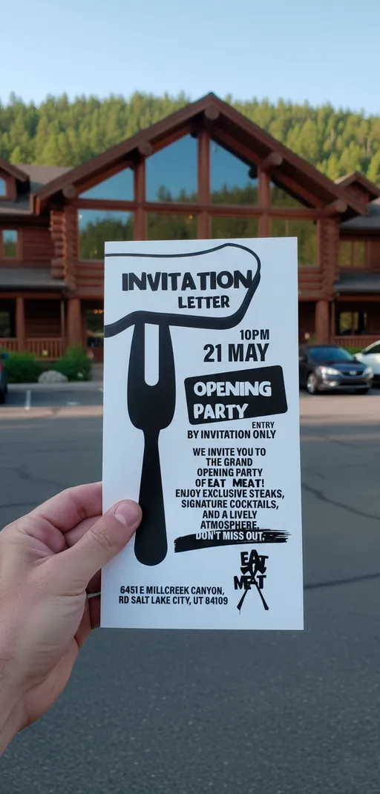
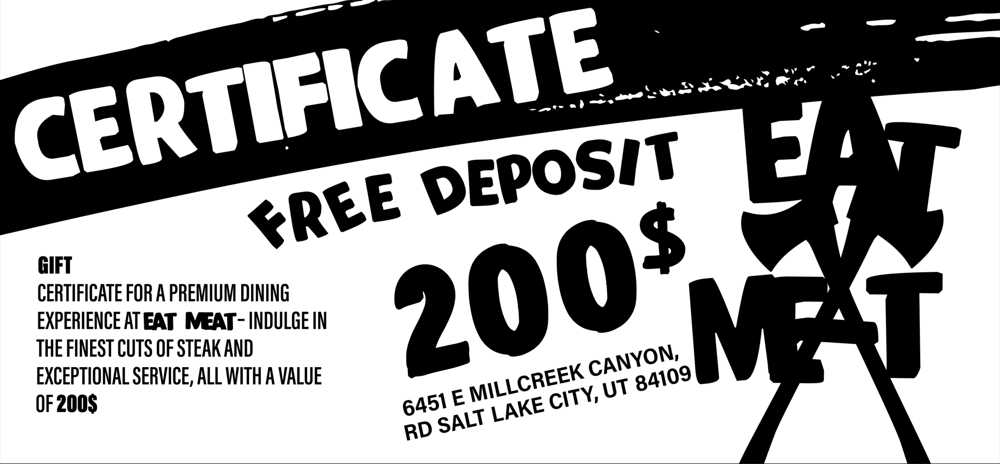